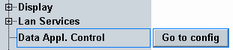
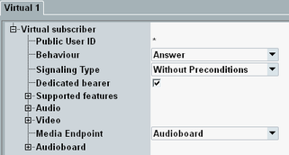
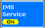
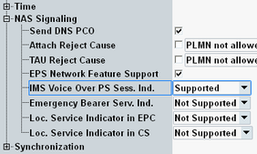
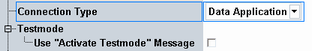
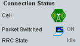
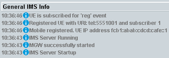
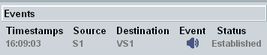

The following sections describe in detail how to set up a voice over LTE call. We use the default scenario, a standard SISO LTE cell. And we use the default RF connector, RF 1 COM.
- Connecting the UE and initializing the R&S CMW
- Configuring and starting the IMS server of the R&S CMW
- Configuring and switching on the LTE cell
- Attaching the UE to the cell and registering it to the IMS server
- Initiating a voice over LTE call
The instrument is already running. The UE is switched off.
Connect your UE to the RF 1 COM port of the instrument.
Press RESET and perform a global preset.
Enable the applications:
Press SIGNAL GEN.
The "Generator/Signaling Controller" dialog box opens.
Enable "LTE Signaling 1".
Press MEASURE.
The "Measurement Controller" dialog box opens.
Enable "Audio Measurements 1".
Enable "Data Appl. Measurement 1".
If this entry is not available, you can skip this step. The presence of the entry depends on the presence of option R&S CMW-KM050.
The task bar at the bottom contains now hotkeys for access to the LTE signaling application, the audio measurements and - optionally - to the data application measurements. To show or hide the task bar, press TASKS.
Open the "Data Application Control" dialog box.
Alternative 1, with R&S CMW-KM050:
On the task bar, press "Data Meas 1". The "Data Application Measurement" view opens.
Press the "Configure Services" softkey.
Alternative 2, without R&S CMW-KM050:
Press SETUP. The "Setup" dialog box opens.
In the "System" section > "Data Appl. Control", press the "Go to config" button.

The "Data Application Control" dialog box opens.
Select the "IMS" tab.
Press the "Subscriber" hotkey.
A dialog box opens. Configure "Subscriber 1" as follows:
Enter the private user ID of your mobile.
Configure the authentication settings compatible to your mobile.
Enter all public user IDs of your mobile.

Press "Apply" and then "Close".
Press the "Virtual Subscriber" hotkey.
A dialog box opens. Configure "Virtual 1" as follows:
Set the "Signaling Type" compatible to your mobile (call setup with or without SIP preconditions).
Enable the "Dedicated Bearer" checkbox.
Configure the "Audio" and "Video" codec settings compatible to your mobile.
Set "Media Endpoint" to "Audioboard".

Press "Apply" and then "Close".
Press ON | OFF.
The IMS service is started. Wait until the "IMS" softkey displays the state "ON".

On the task bar, press "LTE Signaling 1".
The "LTE Signaling" view opens.
Adjust the RF settings to the capabilities of your UE.
Configure especially the duplex mode (FDD / TDD), the band, the channel number and the cell bandwidth. The "RS EPRE" must be sufficient so that the UE can receive the DL signal.

Press the "Config" hotkey.
The LTE signaling configuration dialog box opens.
In section "Network" > "NAS Signaling":
Enable "EPS Network Feature Support".
Set "IMS Voice Over PS Sess. Ind." to "Supported".

Configure the remaining "Network" settings compatible to your UE, especially the sections "NAS Signaling", "Identity" and "Security Settings".
In section "Connection", set "Connection Type" to "Data Application".
Disable "Use 'Activate Testmode' Message"

Close the dialog box.
Press ON | OFF.
The LTE cell signal is switched on. Note the displayed connection states and wait until the process is complete.

Switch on the UE.
The UE synchronizes to the LTE cell signal and attaches. A default bearer is established.
Note the displayed connection states and wait until the attach procedure is complete and the RRC connection is established.

Open the "Data Application Control" dialog box.
Task bar > "Data Meas 1" > "Configure Services" softkey, or
SETUP > "Go to config" button
The "Data Application Control" dialog box opens.
After attaching to the LTE cell, the UE registers to the IMS server.
Check the successful registration in the "General IMS Info" area on the IMS tab.

Perform the following steps or set up a mobile-terminating call, see "Initiating a mobile-terminating VoLTE call".
| ► | Dial an arbitrary number (public user ID) at the UE. The call is accepted by virtual subscriber 1 of the IMS server. A new line is added to the "Events" area. After call setup completion, the status in that line equals "Established".  In the LTE signaling application, a dedicated bearer has been set up. |
Perform the following steps or set up a mobile-originating call, see "Initiating a mobile-originating VoLTE call".
Press the "Virtual Subscriber" hotkey.
A dialog box opens.
Press the button.
The mobile-terminating call settings are displayed.
Configure the following call settings:
Select the "Destination" that you want to call.
Select the "Call Type".

All other call settings are copies of already configured settings.
Press the "Call" button.
The dialog box is closed.
The mobile is alerted.
A new line is added to the "Events" area. The status in that line equals "Ringing".
Accept the call at the mobile.
The status in the "Events" area changes to "Established".
In the LTE signaling application, a dedicated bearer has been set up.